ハートフルスクールは、占いハートフル直営の、占い師を育てる学校として、創立17年を迎えた占いと心理の専門スクールです。
占い学習アプリを使った実践的な練習と、プロの人気占い師による講義で、
初めての方でも仕事にできるプロの占い師のスキルを身につけることができます。
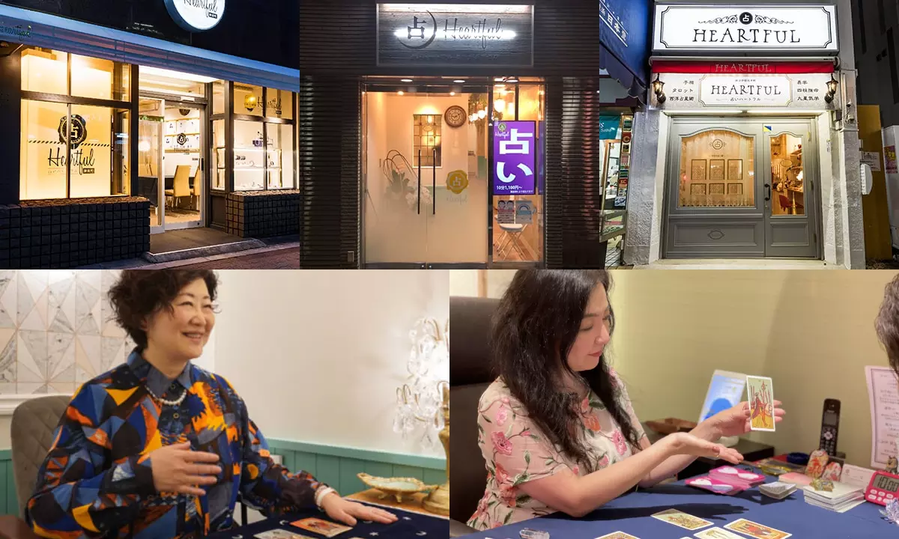
-
占いハートフルとは？
東京都内と横浜を中心に11店舗展開中！
90名以上の占い師が活躍する人気の占い館です！当講座を受講後に卒業した生徒の皆さんが、プロの占い師として多数活躍中！
ハートフルスクールについて
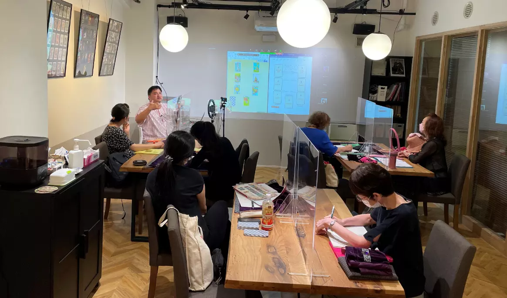
当スクールは、文京区白山に2校あり、占い師のプロになるための講座を随時開催しております。
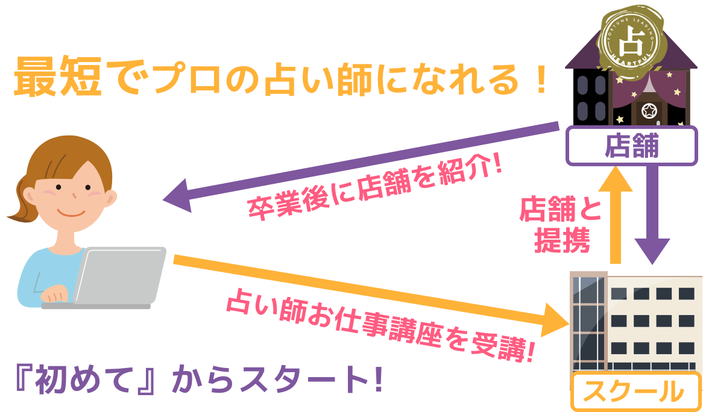
占い館の直営スクールだから、卒業後すぐに、
店舗から占い師デビュー！ 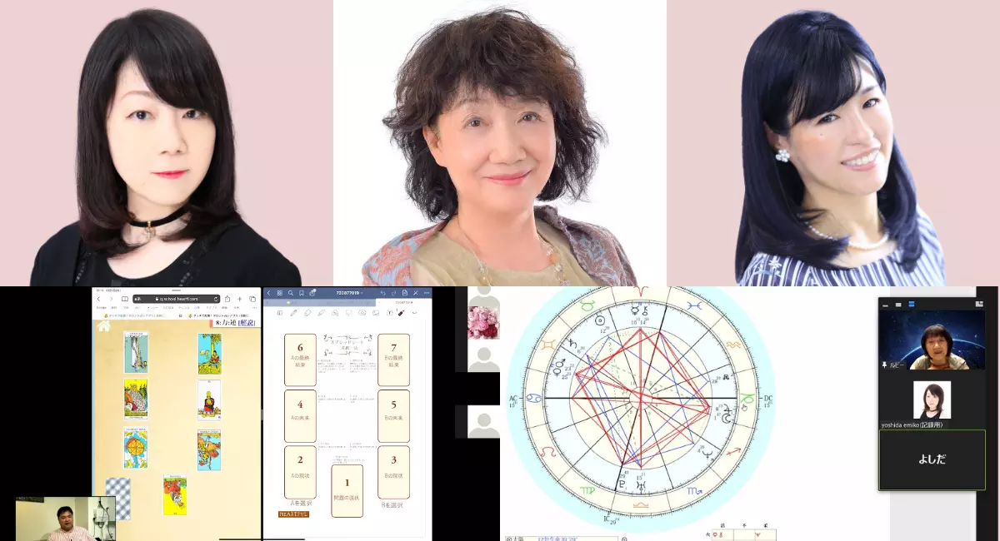
占い館で活躍する大人気の占い師から、占いのスキル・店舗での働き方・お客さんの集め方まで直接伝授してもらえるのはハートフルだけ！
プロの占い師への一番の近道！-
多数のメディア出演！様々な媒体から注目されています！
メディア放映：2015.5.24 [テレビ東京]センニュウ★感 / 2016.8 [フジテレビ]とくダネ！ / 2021.4.12 [TBSテレビ]Nスタ / 2021.5.5 [TBSテレビ]Nスタ その他多数！
こんな方にオススメ！
- 占いや心理に興味があり、占いが出来るようになりたい。
- 副業で占い師を始めてみたい。
- 一日でも早く占い師になりたい
- 占い師として本格的にプロデビューしたい！
- 占い師としての優れた技術を一度に身に付けたい
趣味からプロを目指す方まで
年齢・性別・職業問わず
占い師になるための技術・知識がまなべる
「占いが好き」から始める占い専門講座です
-
占い師は性別・年齢問わず、趣味・副業から本業まで
自分のやりたい形で、幅広く活躍できます。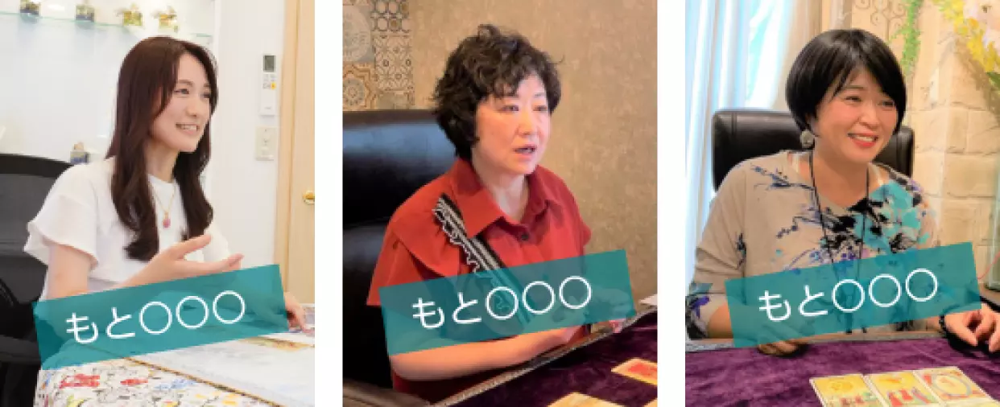
みんな最初は「初めて」から！
普通の主婦や会社員の方が、当スクールからデビューし 今では人気の占い師に！ -
占いでどれぐらい稼げるの？
-
Aさんの場合
週4日1,094,156円
-
Bさんの場合
週3日649,582円
-
Cさんの場合
週2日236,500円
-
Dさんの場合
週1日156,240円
生徒たちが占い師になってからのリアルに稼いだ手取り金額です。
副業でも本業でもやり方次第で、目標を持って占いをされますと、しっかり収入を得ることが可能になります。 -
講座の特徴について
-
3つの特徴があります！
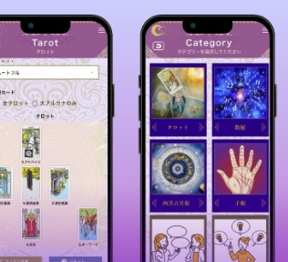
1.日本初の占い学習専用アプリ
「Kanaeru」を使って、スマホから
占いの実践練習がいつでも出来る！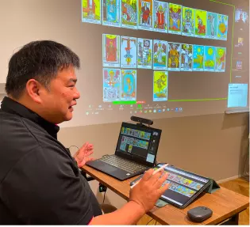
2.人気占い師による講義が
6ヶ月間、好きな時に何度でも、
繰り返し再受講が出来る！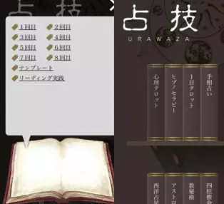
3.受講した講座は、専用コンテンツ
占技（うらわざ）の動画から何度も
視聴して復習が出来る！ -
講座の内容について
「趣味として」「副業にしたい」「本業にしたい」などアナタの目的にあわせたコースが3種類!占い師としてお金を稼ぐための、具体的な講座が学べます。
1.副業コース
平日はお仕事、休みの日に副業したい
2.本業コース
ゆくゆくは仕事を辞めて占いを本業にしたい
3.本業コース
ワンランク上のプロとして稼いでいきたい
日本初！AIを活用して実践的に
占いの学習が出来るソフト
「Kanaeru」を導入！
ハートフルスクール監修のもと、占いを学ぶ人のために作られた、日本初の占い学習専用アプリです。
いつでもどこでも、好きな時に
占いの練習ができるから、やればやるほど
占いのスキルがどんどんアップ！
4つの占いを実践形式で
練習できます！
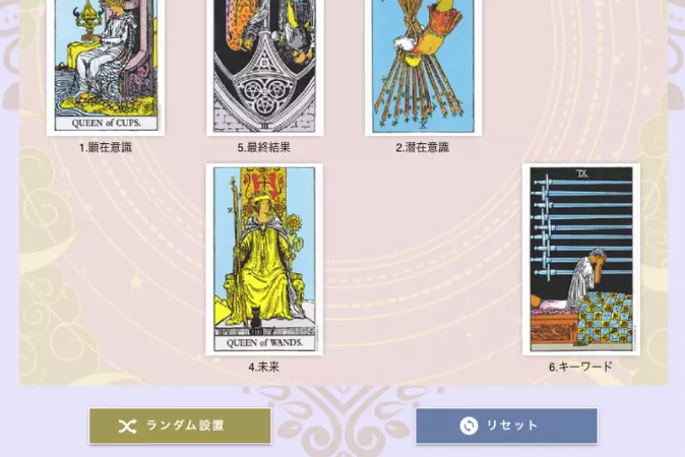
タロット占い
一枚引き、三枚引き、二者選択、ヘキサグラム、ケルト十字など6つの手法を用いて、タロットカードのリーディングを行うことができます。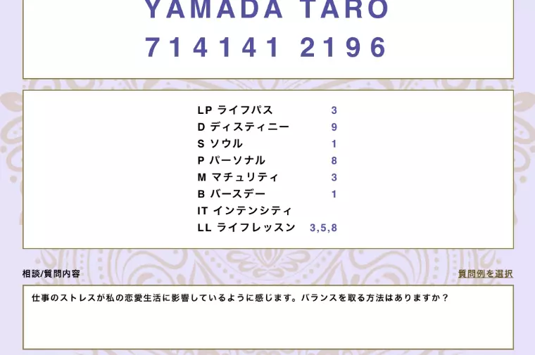
数秘術
入力した内容に基づいて計算されたライフパスナンバー、ディスティニーナンバーやバースデーナンバーなど計8種類の数秘の結果を提示します。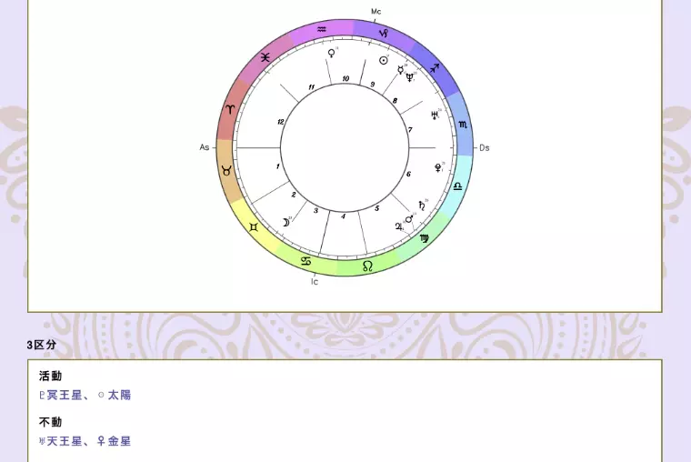
西洋占星術
入力した内容に基づいて計算された10つの天体と12つのハウスに対応する星座やアスペクトなどのホロスコープの結果を提示します。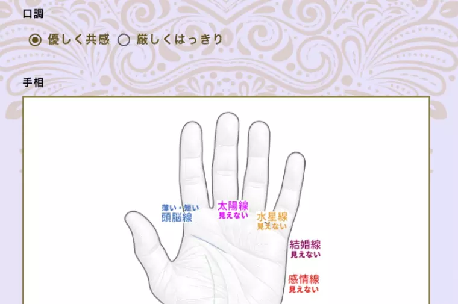
手相占い
入力した生命線、環状線、頭脳線、運命線、太陽線、財運線、結婚線の内容を用いて、手相占いの結果を行うことができます。
生成AIが実践的な占いのシミュレートをサポート！
実際にお客様が相談にきて、占いをして、結果を答える。一連の実践練習を、アプリの中だけで完結！「相談内容×占いの手法」という膨大な組み合わせにおいても、それぞれの異なる結果が即座に生成されます！
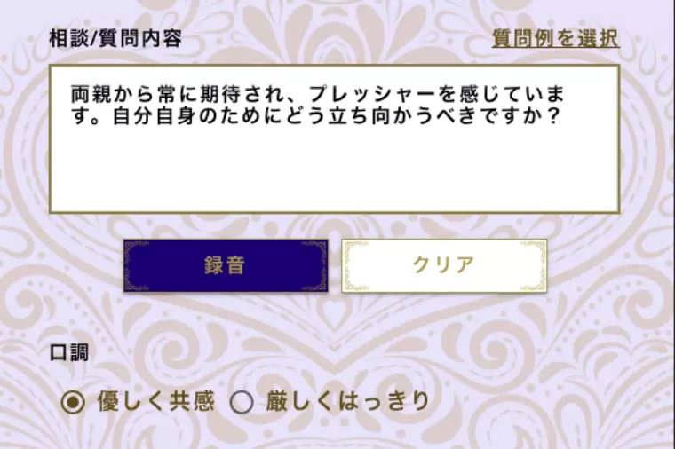
Step.1
相談者として想定される、質問内容などを入力します。（占術によって入力項目は異なります）-
Step.2
占いの実践練習を行い、占いが終わると占い 結果が生成されます。 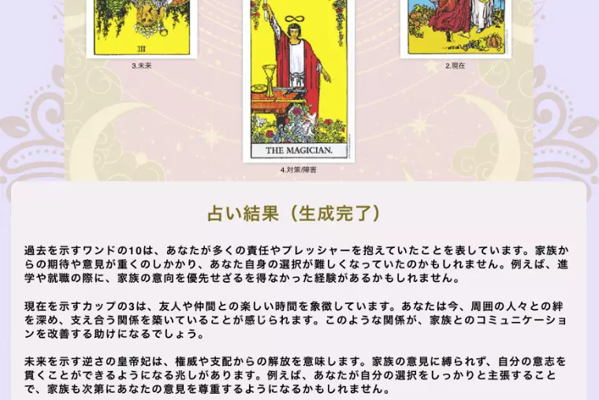
Step.3
あなたの占いによって導きだされた、リアルで具体的な占いの結果が生成されました！
ココがすごい！AIが「性別」「年齢」「性格」などに合わせて、アドバイスの伝え方もフォロー！
-
新入社員で大人しそうな男性には、どんな言葉でアドバイスしたらいい？などの場合の答えを具体的に出してくれるスゴい機能です！
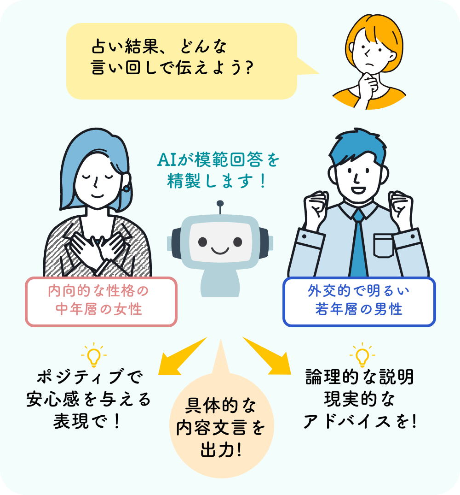
-
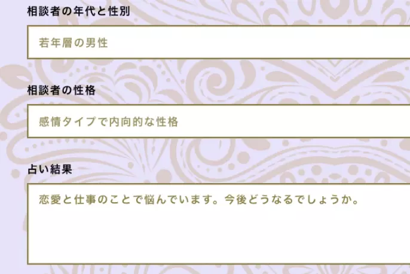
相談者の相手の年代と性別、性格を選択して、想定される質問内容と、占い結果に基づいてアナタが考えたアドバイスの文章を入れます。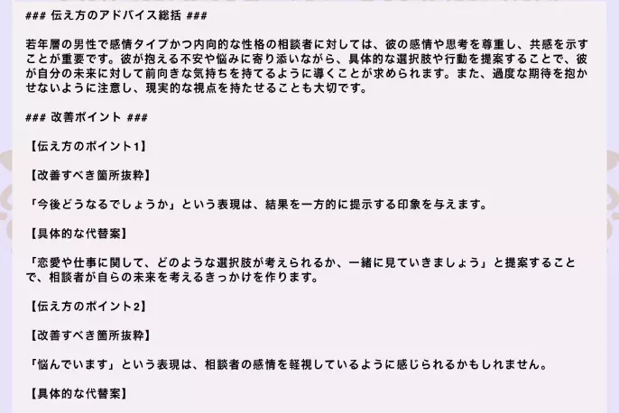
[機能1]伝え方レビュー
相談者に合わせて、より効果的に伝える４つのアドバイスを、具体的な文章として提案してくれます。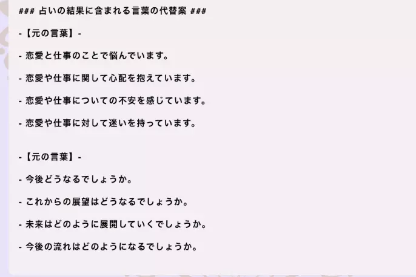
[機能2]表現の拡張
アナタが入れた文章内の言葉や単語に基づき、より幅広い表現の文言パターンを、多くのバリエーションで教えてくれます。
私たちがプロの占いを
伝授します！
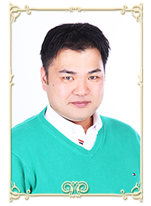
代表 佐藤 隆三
ハートフルスクール代表。幼少の頃よりタロット占いを続けてきた熟練の占い師。心理カウンセラーの資格と臨床催眠療法士の資格を持ち、優秀な占い師及びセラピストを100名以上も輩出している。
-
伊藤 あやね
ヒプノセラピー前世療法界の第一人者、よしだひろこ氏の娘であり、正式な技術を受け継ぐ後継者。小さな頃からスピリチュアルの能力に目覚め、スピリチュアルな方面からの鑑定も大人気の現役占い師。
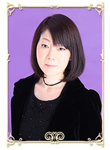
まんまマリア
占いハートフル在籍占い師90名の中で人気ナンバーワン占い師。鑑定したクライアントは2万人を超える。多数のメディアやTV出演があり全国からお客様が通うほど。
-
ルビー・ラクシュミー
タロット、手相、西洋占星術、数理占術、風水、ルーン、宝石占いなど多様な占いを操る開運コーディネーター。悩める人のライフアドバイザーとして人気を集めている。
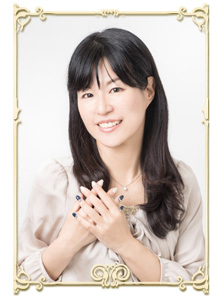
山崎 桜
カバラ数秘術、現代数秘術、タロットなどを使う占い師。特にオリジナルの数秘術とタロット占いを組み合わせる鑑定はまさに驚異的な的中率。占いハートフルの専属占い師。安定した鑑定でリピート率が高い。
受講者様の声
-
40代 女性
受講回数に縛られず自分のペースで進められました。
実践的な内容で占い師としてのスキルが即効で役立つことを感じました -
50代 女性
心理タロット講座の新しい視点は驚きでした。
お客様へのアプローチ方法が楽しいです。学びを深め鑑定スタイル向上させていくつもりです。 -
40代 女性
医療からの転身は勇気のいる一歩でしたが、占いを通じて多くの人との繋がりを感じ、多くの人との繋がりで成長し、過去の克服に挑戦しています。
-
30代 男性
占いのイメージが変わり未知の世界への一歩を踏み出す感覚だった。実践カリキュラムが良かった。これからの挑戦にワクワクしている。
まずは無料説明会へ、
お気軽にご参加ください!
無料説明会では、講座の内容はもちろん、次のようなことが詳しくわかります。
具体的な講座の料金や開講日程
どんな技術が身に付くのか
ライフスタイルに合わせた働き方
実際に授業が行われる場所の見学
受講から占い館で働くまでの流れ
現役の占い師による仕事内容の説明
説明会に来られても、コースの押し売りや強い催促をするようなことは決していたしません。安心してお気軽にお申し込み下さい。
説明会は日・火・水12:45から、40分程度です。
都営三田線の白山駅から徒歩2分
講座のご紹介
-
心理タロット講座
占いと心理カウンセリングを融合した心理タロットは、特許庁にも登録を認められた確かな技術で、相談者の悩みを解決するだけでなく、相談者自ら行きたい方向へ選択し行動できるようになります。
-
手相占い講座
人の身体にある部位で見る「相占（ソウセン）」という占いの１つで、どこからどこの丘に向かっている線か覚えていきます。タロットカードなど他の占いと組み合わせた時、適職・結婚時期・健康状態などを具体的にアドバイスができるようになります。
-
西洋占星術講座
出生日と時間から占うのが占星学です。惑星が持つ意味や12星座の持つ特徴を学びます。
まずはご自身の星や性格、婚期や、幸運期を知ってみましょう。ホロスコープとはどういうものか学べます。 -
数秘術講座
主に「生年月日」と「出生時の氏名」の二つの側面からその人を占います。鑑定結 果は、4憶8千パターンとも言われ、同じ性格・素質の人はほぼ無いと言われています。数秘術は「現在軸」の自分（または相手）を複合的に細かく分析できるところが強みの占術です。
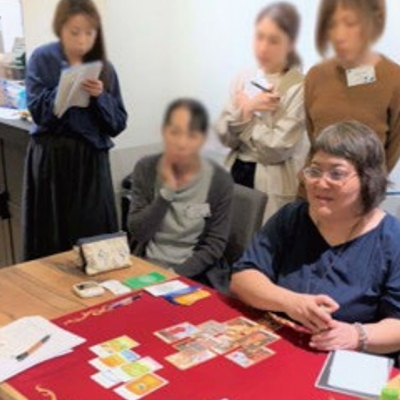
人気占い師育成講座
プロになるには占いの技術だけではなく、大切なマインドセットを学びます。考え方の基礎となる簡単な考えかたや発想の転換、対面占いに特化したスキルや伝え方を徹底解説します。他の占い教室にはない独自の「占い師で食べていくための独立サポート」も致します。
-
マーケティング講座
ブログやその他のデジタルプラットフォームを活用し、お金をかけずに効果的に集客する方法を深く掘り下げて学びます。占いの技術だけでなく、多くの人々に自分を知ってもらい、魅力を伝えることが事業成功のカギです。占い師として成功するための重要なスキルです。
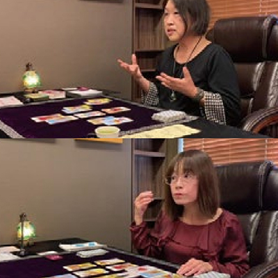
対面鑑定講座
占い店舗に初めて出演されるとき戸惑ってしまわないように、プロデビューする前に接客の方法や会話の始め方から占いの進め方を実践指導する講座です。占いをするまでの段取りや、相談内容の聞き取りかた。占いのはじまりから占いの手順など具体的な接客方法を学びます。
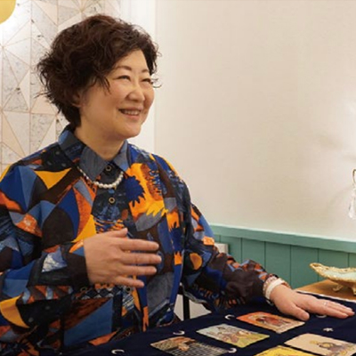
占いコンサルティング
相談者から求められる魅力ある占い師として稼いでいきたい。占い館で抜きに出るワンランク上を最短で目指すためのノウハウを教えます。ハートフルの占い館で働いているナンバーワンの先生がじっくりと個別に指導をいたします。（そのため、年間で受講できる方の人数に限りがあります。）